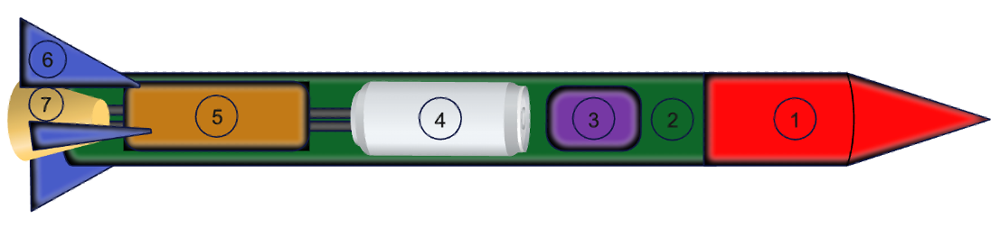
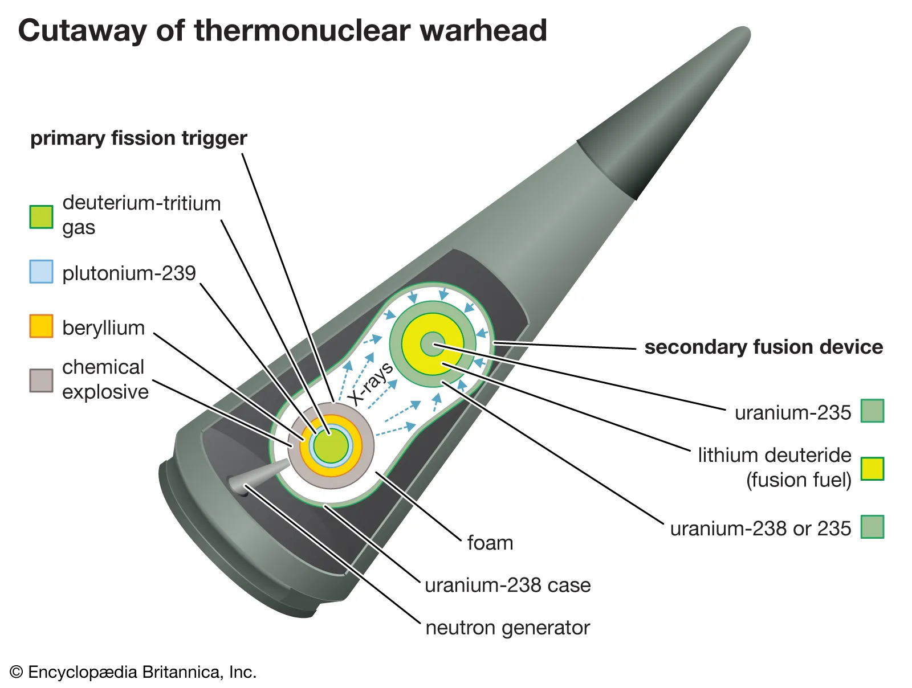
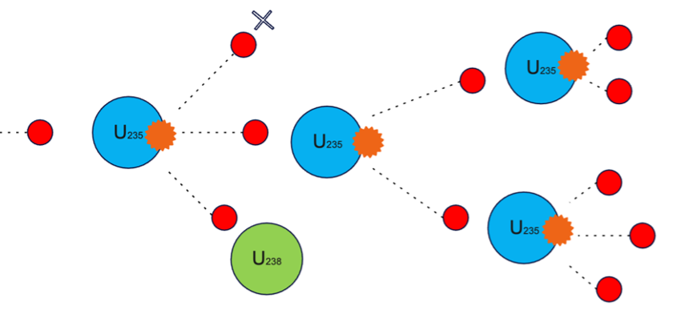
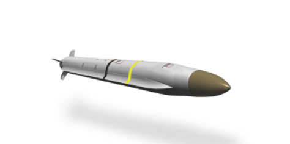
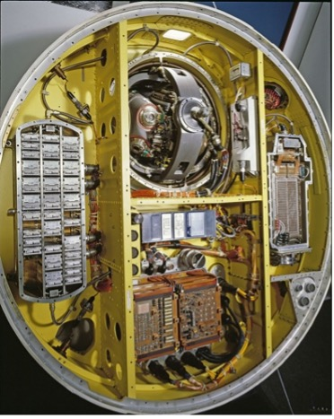
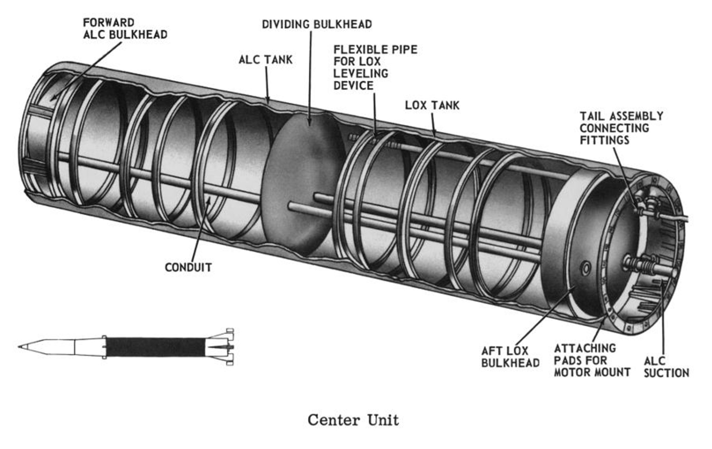
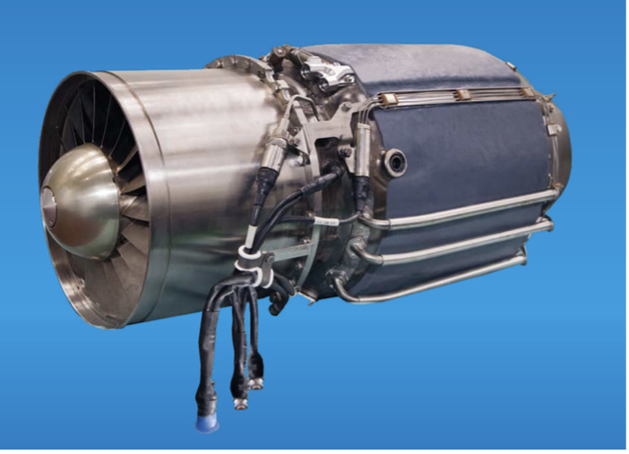
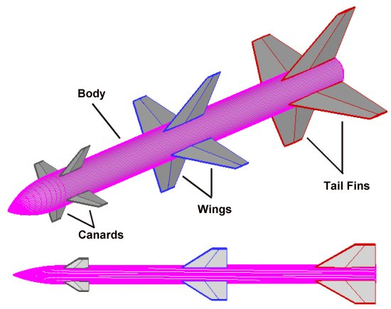
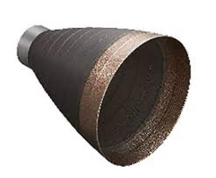
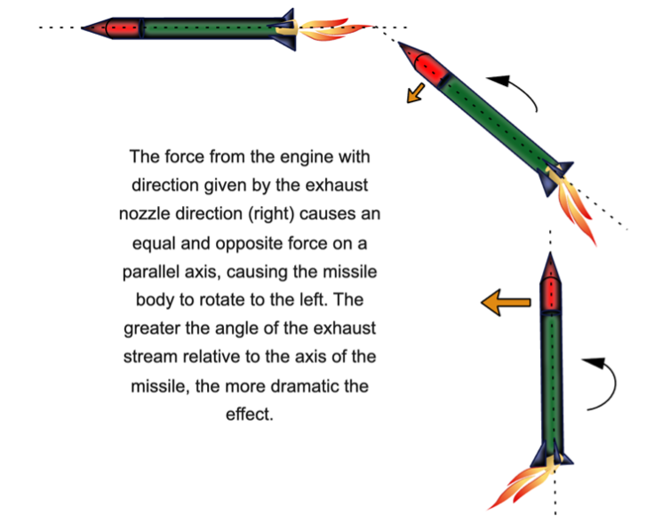

Components of a missile

There’s no doubt that missiles are complex pieces of technology, using the laws of physics and various components of technology to successfully work, from launch to impact. In this article we will be looking at the internal tech components of a missile and will be using the laws of physics to explain how they all work in tandem.
Although in real-life, the components may be slightly different and may include/exclude specialist extras, the above diagram demonstrates a simplified general formula of the components typically found in missiles.
1. The Payload

This is the item that the missile is designed to transport. This could be a satellite or space probe, if used for space-research, however, in warfare, this is almost always a warhead containing a high-explosive compound. On impact, the pressure on the front from the implosion causes this warhead to activate and react, causing an explosion. Thermobaric weapons enhance the blast effect by dispersing an aerosol cloud of explosive gas, using the oxygen from the atmosphere in their reactions. Nuclear warheads use the concept of nuclear fusion (thermonuclear weapon) or runaway fission (fission bomb) to create extreme releases of energy with devastating effect [3]. The diagram below visualises this nuclear fusion process for enriched uranium-235, commonly used for this purpose.

We can see that for fission (in a nuclear warhead):
2. The Bodyshell (airframe)

Since it encases all other parts of the missile, it is subject to large amounts of drag, and hence a large amount of force. This drag force is typically minimised by using a thin, streamlined bodyshell as shown above. This means that since thrust=drag at a constant speed, for a given thrust, to have a drag such that this is the case for a thinner airframe, it will be travelling at a higher velocity. The bodyshell is also designed to be as light and strong as possible - a lighter bodyshell means that the lift to weight ratio is minimised, allowing easier launch [5]. For a more in depth look at the aerodynamics of a missile, see our article on the aerodynamics of a missile.
3. Guidance and Control Systems

Missile guidance systems are highly technical and complicated pieces of tech but rely on simple physical principles. For example, the guidance system consists of a seeker, which provides angle and range rate information. A filter (typically a Kalman filter) uses this information with an internal target acceleration model to obtain estimates of relative position, velocity and acceleration of the missile and target. This information is passed on to an autopilot system [7], from which the fins (see below) can be used to adjust the trajectory. For a more in-depth look, see our article on the long-range guidance of missiles.
4. Fuel and Oxidant Tank

This is where the fuel (propellant) is located. For liquid propellants, the fuel and oxidiser components are kept in separate tanks and mixed in the correct quantities before being ignited, whereas for solid propellants, the fuel and oxidiser are kept together in a solid configuration. Currently, other types of propulsion such as ionic, nuclear and plasma are under research but are not yet in use [9].
5. Rocket Engine

This contains a combustion chamber in which the propellant is ignited, releasing large amounts of energy in an exothermic reaction. This produces a stream of high-velocity gases which are passed through the nozzle to produce a force (thrust). The guidance and control system controls how much thrust the engine produces. To learn more about its role, see our article on the Physics of propulsion of missiles.
6. Tail/Body Fins

These are directional fins located on the missile that can be used to direct airflow and provide stability to the missile on its flight, as well as allowing more control over its trajectory. By changing the angle of these fins (canards/wings/tail fins) these can induce significant rolling moments (turning forces). These typically fall under two categories: skid-to-turn (STT) and bank-to-turn (BTT). STT allows the missile to manoeuvre in any plane without rolling, and BTT is used when minimising drag is favoured [7].
7. Nozzle

This component ‘funnels’ the hot, (typically reaching temperatures of 2000-3500 ℃ [9]) high-velocity exhaust gases, essentially determining how the momentum of the missile varies, as well as any changes in angular velocity (turning speed) . This is a system which is implemented by MBDA’s Common Anti-Air Modular Missile. This is one method of launch which uses smaller thrusters, allowing the missile to be pointed at the target before the main motor fires [13]. The diagram below demonstrates the physics behind this.

Quiz
Test your knowledge with this article's quiz.
See next: Guidance
References
[1] Image by H. Mellor
[2] Thermonuclear warhead "Encyclopædia Britannica" Accessed 05/02/24
[3] Wikipedia "Warheads page" Retrieved 27/01/24
[4] "Northrop Grumman article"
[5] Ryan Starkey and Mark Lewis. "Design of an engine-airframe integrated hypersonic missile within fixed box constraints" AIAA 1999-509. 37th Aerospace Sciences Meeting and Exhibit. January 1999.
[6] National air and space museum "minuteman guidance system"
[7] Brian A. White, Antonios Tsourdos"Modern Missile Guidance Design: An Overview" IFAC Proceedings Volumes, Volume 34, Issue 15, 2001, Pages 431-436, ISSN 1474-6670, https://doi.org/10.1016/S1474-6670(17)40765-8.
[8] Redstone days"Fuel tank image" p11.6
[9] Swami J (2021) "Missile Propulsion System." J Aeronaut Aerospace Eng. 10:p273
[10] PBS "engine image"
[11] Aerospaceweb.org "Fins image"
[12] DMG MORI "Nozzle image"
[13] Głębocki, R., & Jacewicz, M. (2018). "Simulation study of a missile cold launch system." Journal of Theoretical and Applied Mechanics, 56(4), 901-913.